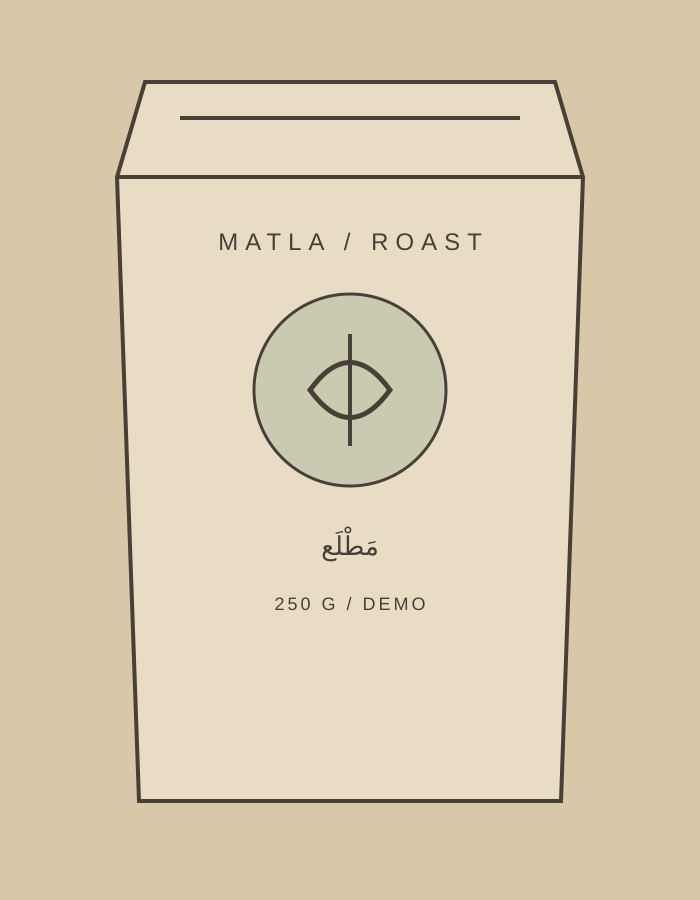
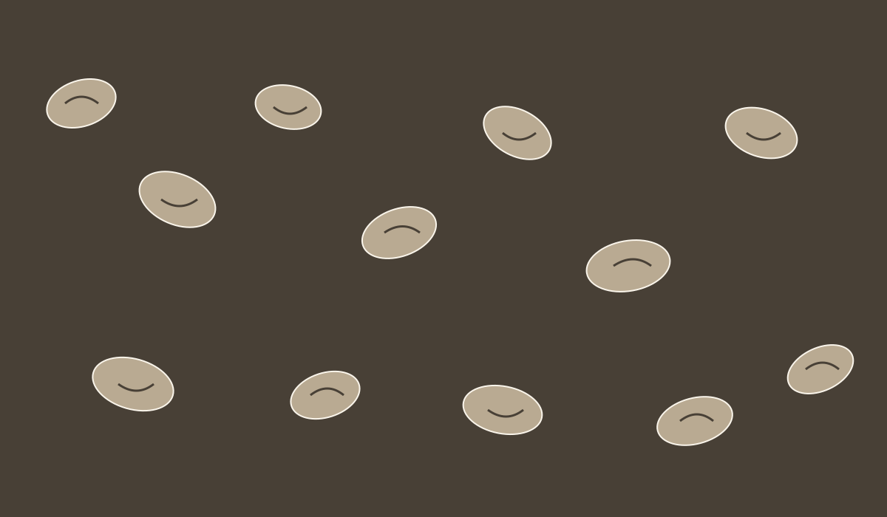

RIYADH / SAUDI ARABIASMALL BATCH / DEMOEST. FOR PRESENTATION
MATLA / ROAST LOG

ROAST LOG / 03التحميص ليس لونًا.هو قرار في كل دفعة.TIME / 11:42 — 12:18PROFILE / حلو · واضح · متزنCUP / ياسمين · خوخ · سكرمَطْلَع
كل كيس يحمل سبب وجوده.
ثلاثة محاصيل. ثلاث طرق للبدء.
SELECTED COFFEES / DEMO RANGE
بدل قائمة طويلة، نترك لك ثلاث نقاط واضحة: فاكهية ومشرقة، متزنة وحلوة، أو دافئة وممتلئة. اختر من الذائقة، لا من اسم البلد فقط.
MATLA / 001250 G
إثيوبيا · قوجيحمصة فاتحة
قوجي
ياسمين واضح، خوخ ناضج، ونهاية حلوة تشبه سكر القصب. محصول للفلتر عندما تريد كوبًا مشرقًا بلا ضجيج.
المعالجة
مجففة
التحضير
V60 / فلتر
الإيحاءات
ياسمين · خوخ · سكر قصب
السعر التجريبي
68 ر.س للعرض فقط
لا يوجد متجر أو دفع في هذا العرض. الزر يجهّز رسالة استفسار قابلة للنسخ فقط.
مَ
التحميص عندنا ليس لونًا أغمق.
نحمّص حتى تظهر شخصية البن، ثم نتوقف.
الدفعة الصغيرة تسمح لنا أن نقرأ الحبة قبل أن نطلب منها أن تتكلم. نراقب الحرارة والوقت، ثم نعدّل الملف بحسب ما نريد أن يبقى في الكوب: حلاوة، وضوح، أو قوام.
INPUTحبة خضراء
DECISIONدرجة التحميص
OUTPUTكوب واضح
01 / SELECT02 / ROAST03 / CUP

THE ROASTED BEAN / MATLA
A SMALL BATCH, NOT A BIG CLAIM
المنتج الحقيقي هو ما يبقى في الفنجان.
لهذا لا نحتاج إلى جدار من الادعاءات. نعرض المنشأ، المعالجة، الإيحاءات وطريقة التحضير المقترحة، ثم نترك لك مساحة التجربة.